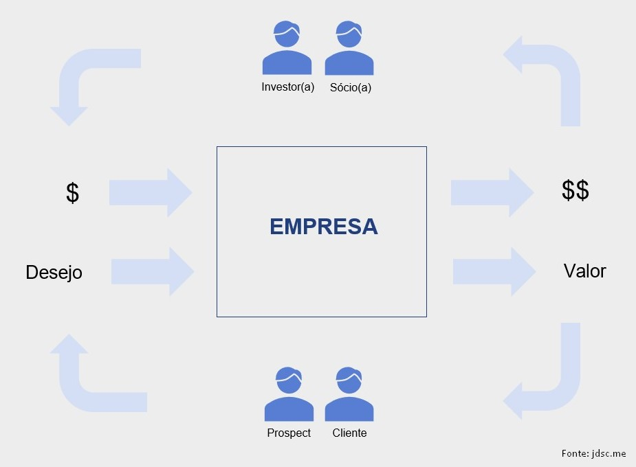
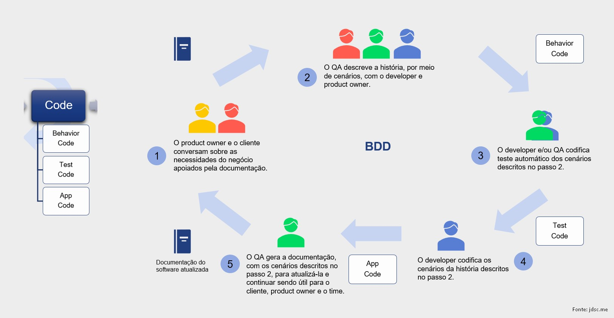
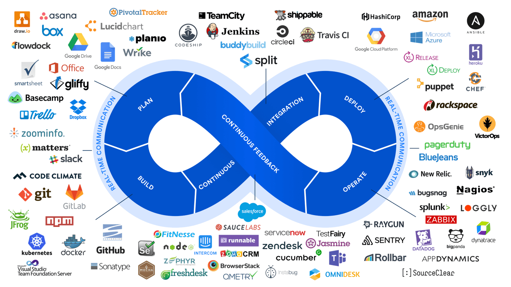
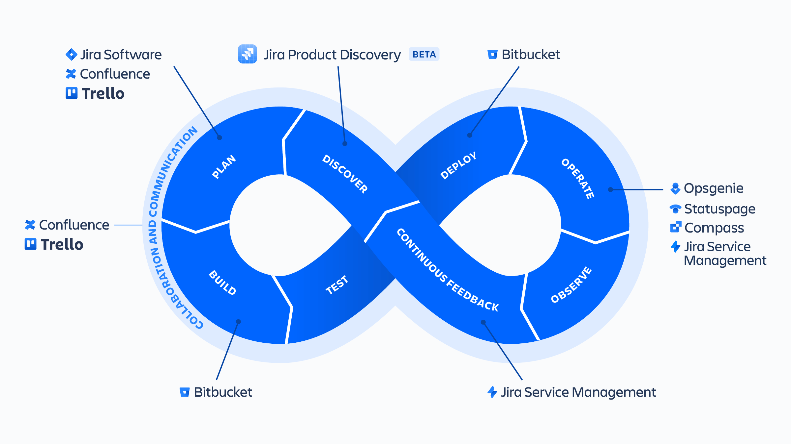

Arquitetura e Engenharia para identificar e melhorar a maturidade da TI
Em 2021, fui chamado para fazer avaliações em empresas para sugerir melhorias em arquitetura e engenharia na área de tecnologia.
Tal como uma caixa de ferramentas que é pouco utilizada em uma casa construída recentemente, mas amplamente utilizada em uma casa construída há décadas, considero importante conhecer o máximo de ferramentas possível porque não saberei em qual casa estarei.
Diante disso, todas as técnicas (ou ferramentas) de arquitetura, que vão além de tecnologia, por exemplo TOGAF, e engenharia, por exemplo SWEBOK e, um ótimo resumo recente, ESM, não são necessárias para todas empresas e não são necessárias para todos os projetos (principalmente, em função de prazo e restrições). Mas considero importante conhecê-las para você criar a sua própria caixa de ferramentas. Isso ajudará se você quer estruturar melhor (Arquiteto[a]) ou se você quer construir melhor (Engenheiro[a]).
Portanto, o motivo desse post é descrever, de forma resumida, a minha caixa de ferramentas para realizar essas avaliações. Com certeza, não é igual de outra pessoa e isso não é um problema. Como mudar é necessário para evoluir, ela está em constante mudança.
Antes, gostaria de alinhar que, para mim, arquitetura responde a pergunta “Qual é a estrutura?” e engenharia responde a pergunta “Como construir a estrutura?”.
Então, qualquer técnica para estruturação de empresa ou software entendo que é arquitetura e qualquer técnica para construção da estrutura entendo que é engenharia. Observe que, nesse raciocínio, engenharia utiliza a estrutura definida para realizar qualquer construção.
Existem técnicas que podem estar nas duas categorias, mas prefiro simplificar e fugir de discussões que não agregram ao negócio.
1. Empresa#
Ao citar negócio, é inevitável não escrever sobre a importância de conhecer o funcionamento genérico de empresa e como a falta desse conhecimento pode afetar negativamente quem está na área de tecnologia.
Diariamente, pessoas trocam dinheiro por produto ou serviço porque consideram o valor percebido naquilo que querem maior do que o valor cobrado. Essa troca cria um fluxo e quem é da área de tecnologia está mais próxima dele porque, atualmente, esse fluxo ocorre na internet estruturado por tecnologia.
Atualmente, pessoas entram no Google em busca de um produto ou serviço e dispostas a pagar por eles. Você, comparada a quem não é da área de tecnologia, tem mais facilidade para criar uma página e inserí-la no topo do resultado da pesquisa no Google para participar dessa troca.
Parece simples, mas é longe disso. Infelizmente, os cursos de tecnologia que conheço, inclusive universitários, preparam as pessoas somente para exercerem papel operacional e esquecem conhecimento sobre finanças, marketing, oratória e, principalmente, inteligência emocional que geram atitudes além da operação da área de tecnologia.
Importante dizer que ninguém é obrigado a ter esses outros conhecimentos. Estar na área de tecnologia, atualmente e financeiramente, é um privilégio, ainda mais se estiver trabalhando remoto do Brasil recebendo em dólar. Porém, para os quais não gostam de fazer somente o mínimo, é possível, se entenderem que fracassos estão entre você e o seu objetivo.
Eu crio negócios na internet desde 2014. O conhecimento em tecnologia foi, e continua sendo, muito útil e esse é o lastro das palavras acima. Além desses, conhecimento financeiro para controlar o fluxo de caixa, marketing para fazer melhores campanhas e um pouco de contabilidade são conhecimentos fundamentais.
Aliás, você como pessoa física também possui o seu fluxo de caixa. Para isso, nada melhor do que, na minha opinião, o meu livro da série Pai Rico, Pai Pobre, o livro Independência Financeira que traz, de forma prática, esse conhecimento para pessoa física.
Outro ponto importante: Ninguém é obrigado(a) a conhecer essas outras áreas para criar negócios. Se você deseja, junte-se à outra(s) pessoa(s). Por isso, estar relacionado com o maior número de pessoas, fundamentado em honestidade e altruísmo, é importante. Um ditado que é fato, dito mais ou menos assim: “Você é a média das pessoas que mais convive”.
Sobre a estrutura genérica de uma empresa, eu gosto de pensar tal como um sistema que recebe input, realiza processamento e gera output para atender um beneficiário que possui uma expectativa. Portanto, eu consigo pensar em um “sistema de criação de dinheiro” e um “sistema de criação de valor” (termo), conforme abaixo.


Com a internet é possível criar uma empresa (ou sistema) que gere renda (passiva ou quase) estruturada com, por exemplo, blogs, vlogs, mobile apps ou web apps. Desde que você agregue valor honestamente e, se possível, crie uma marca, está valendo. Esse livro traz algumas reflexões sobre isso.
E não adianta criar seus recursos (ou ativos) na internet e não saber como divulgá-los. Por isso, usar, por exemplo, o Google Ads, Facebook Ads ou SEO (se não tiver pressa) é fundamental, ambos guiados por um processo que gera resultado. Pode-se comprar ads em influencers ou, quem sabe, ele(ela) promova seu produto ou serviço de graça por precisar de pauta ou considerar ótimo (melhor cenário).
A principal dificuldade é conseguir gerar fluxo de caixa positivo, seja investindo dinheiro em ads ou investindo tempo (e, às vezes, dinheiro) em SEO, ambos para gerar tráfego para os seus recursos. Técnicas como funil de vendas, upselling e derivados, CRM, etc, são úteis para otimizar e aumentar a chance de gerar fluxo de caixa positivo.
Por outro lado, o benefício de ser difícil é que as oportunidades não desaparecem e os quais estão surfando poderão continuar. As pessoas que já vi divulgarem oportunidades ao público geral o fazem porque fazem muito mais dinheiro em comissões de curso que ensinam a fazer dinheiro com elas. Logo, o prazo de validade das mesmas diminuem bastante e o “mensageiro milionário” termina como mais beneficiado. Não há santo.
Logo, conhecer de empresa contribui para:
- se você é empregado, (1) gerar atitudes além da operação da área de tecnologia para ajudar a empresa onde trabalha tornando a área de tecnologia precursora de geração de novos negócios (e, quem sabe, ser remunerado a mais por isso) e,
- se você é ou quer ser empreendedor, (2) aumentar a chance de criar seus negócios que gere renda (passiva ou quase) e valor para a sociedade.
Dito isso, vamos entrar em uma empresa e observar as técnicas (ou ferramentas).
2. Arquitetura#
Entre as técnicas que respondem a questão “Qual é a estrutura?”, olhando do mais alto nível, eu vejo primeiro o TOGAF que divide empresa nos três andares abaixo. Existem vários outros frameworks de arquitetura empresarial, mas prefiro esse. Clique na imagem para expandir.

Seguindo essa técnica (ou ferramenta, ou framework) pode-se notar que há uma estrutura definida para cada andar e relações entre eles. Essa estrutura é composta por entidades e dada o nome de metamodelo.
Uma alternativa para trazer essa estrutura para a vida real de uma empresa é utilizar o Archimate por meio do Archi ou draw.io, conforme sugerido aqui com essas instruções.
Observe que existem dezenas de entidades. Acredito que essa estrutura foi definida para tentar cobrir o máximo de tipos de empresa. Então, caso decida utilizar, procure utilizar as entidades que realmente são necessárias para o seu caso de uso ou adapte o desenho (viewpoint) em função do perfil de quem verá. Por exemplo, se for C-level, procure exibir somente o que ele precisa saber. Como eles, normalmente, são os patrocinadores das ferramentas, não fazer isso pode gerar uma percepção errada da ferramenta e ela cair em desuso. Eu já vi isso acontecer e não foi bom.
Por outro lado, existem técnicas mais simples de estrutura tais como C4 Model, UML ou uma estrutura própria. No final, o objetivo sempre será ter um diagrama que por si só comunique a estrutura para transferir conhecimento e sirva para identificar impactos em projetos que alteram a estrutura. Assim como os desenhos da estrutura de uma casa transferem conhecimento para o novo dono e servem para identificar impacto na obra em um banheiro, por exemplo.
Com o metamodelo da Arquitetura Corporativa definido e armazenado em algum software que faz a gestão do mesmo, um processo de Arquitetura Corporativa está minimamente habilitado para ser executado. A imagem abaixo (fonte) ilustra o processo sugerido pelo TOGAF. Clique na imagem para expandir.
Importante considerar que todas as empresas e projetos não precisam utilizar esse processo. Em função das características e contexto da empresa e projeto os critérios são definidos.
Eu acredito que, ao menos, esses devem ser considerados: complexidade organizacional, alinhamento estratégico, reutilização de ativos, tamanho/escala, integração de tecnologia, necessidade de governança e ciclo de vida prolongado.
2.1. Arquitetura de Negócio#
Sobre arquitetura de negócio, as entidades do Archimate me parecem úteis para definir a estrutura. Se tratando da entidade “processo”, a ferramenta BPMN é a notação para estruturá-los. No site oficial é possível baixar a especificação. Entre as ferramentas para isso, prefiro o bom e velho draw.io.
De modo que tecnologia é útil para automatizar processos de negócio, conhecê-los fez parte da minha experência. Não tenho muito conhecimento para escrever e não é meu foco. Para referência, eu prefiro consultar o CBOK.
Nele, é possível conhecer o conceito de modelo de referência que é um modelo normalizado que fornece uma visão integrada de alto nível de uma organização. Usa-se para acelerar a criação de uma arquitetura de negócio a fim de definir a operação de uma empresa. Exemplos:
- Genérico para organizações (APQC PCF etc)
- Específico para uma indústria (SCOR, ACORD, eTOM, BIAN etc)
- Específico para um domínio de conhecimento (ITIL, COBIT etc)
- Específico para uma tecnologia (SAP, Pega, IBM etc)
2.2. Arquitetura de Sistema#
Sobre arquitetura de sistema, considero úteis as entidades do Archimate. Mas quais componentes de software são necessários para definir a estrutura em um determinado contexto? Para isso, entrando nesse andar, vejo a ferramenta DDD responder essa pergunta. A aplicação dessa ferramenta vai além de software, o que a torna mais valiosa. Para referência, embora exista o livro do criador e esses, o livro que mais gostei sobre DDD é esse. Obs.: Essa ferramenta não é necessária em todos os projetos.
Entender as características do projeto (escopo, prazo, orçamento, restrições, riscos, premissas e recursos humanos) e, em especial, os requisitos não-funcionais (atributos de qualidade), é dever de quem está responsável por definir a estrutura porque esses dados direcionam a estrutura.
2.3. Arquitetura de Tecnologia#
Sobre arquitetura de tecnologia, é possível utilizar as entidades sugeridas pelo Archimate compondo-as com as tecnologias do cloud provider ou especialistas.
Para referência, a documentação das tecnologias normalmente são suficientes, seja cloud provider ou especialista. Esse link costuma ser útil quando preciso comparar os serviços da AWS, GCP e Azure.
Dado que as características do projeto são conhecidas, é possível criar a estrutura de forma mais segura. Para isso, existem alguns estilos documentados (fonte). De todo modo, a maioria das estruturas possuirão:
- Serviços de computação: Máquina física proprietária, VM, orquestrador de containers, load balancer, controle de fluxo/repetição e/ou serviço serverless com toda a responsabilidade da infraestrutura terceirizada para o cloud provider, tal como GCP Cloud Run ou AWS App Runner. Esse vídeo apresenta uma parte dessas opções.
- Serviços de dados: Eventos (Pub/Sub, Kinesis, SQS, SNS, Kafka, RabbitMQ etc), processamento (Hadoop, Spark etc), integração (Beam, Airflow etc) e visualização (Looker, QuickSight, Power BI etc).
- Serviços de armazenamento: Bucket, BD relacional, BD NoSQL (colunar, chave-valor, documento etc) e NFS.
- Serviços de segurança: Gerenciamento de identidade (acesso e autorização), gerenciamento de certificados, gerenciamento de variáveis, Firewall, API Gateway, CDN, DNS, VPN e VPC.
- Serviços de CI/CD: Build e release (Azure DevOps, Jenkins etc).
- Serviços de observabilidade: Métricas, Logging e Tracing (Dynatrace, Datadog, New Relic etc).
Independente da estrutura definida, é importante todas as decisões buscarem atender aos requisitos básicos: Rápido, Seguro, Confiável e Fácil de Manter. Se uma decisão de arquitetura quebrar um desses pontos é um sinal de alerta.
Notas:
- Em alguns casos, escrever somente a arquitetura de tecnologia será suficiente.
- Assim como não é recomendado usar cola de madeira em ferro, cada ferramenta de tecnologia foi criada para resolver um problema. E, sim, qualquer uma pode ficar defasada com o tempo porque pode ter sido criada para resolver um problema que atualmente não existe mais. O responsável pela definição da estrutura precisa ter esse discernimento.
- Overengineering é sintoma de falta de experiência e acredito acontecer com todos(as) alguma vez. Então, procure sempre caminhar em direção da simplicidade sempre que possível. Considere que pode ser melhor contratar uma ferramenta pronta ao invés de construir.
- Acredito que complexidade é sinal de falta de entendimento. Se considera complexo, a estrutura ainda não está pronta para encarar a responsabilidade de ser construída por um time de Engenheiros(as).
- Considero o documento Conformance Requirements for the Architect Profession (Open CA) uma referência sobre papéis e responsabilidades de um(a) Arquiteto(a). Vale a pena conferir.
3. Engenharia#
Dado que a estrutura encontra-se definida, vamos à construção. Para isso, eu vejo conforme abaixo. Eu gosto de definí-lo como “cadeia de valor de TI” (SDLC). Clique na imagem para expandir.
Goal é a meta e estímulo para execução do processo. Pode ser resultante das ferramentas PPM, SAFe, LeSS, Nexus e/ou específico da empresa.
Plan é o planejamento e Code é a codificação, normalmente, operados por Scrum e XP. Code contém:
- Behavior Code é o código gerado pelo QA, se o time executa BDD.
- Test Code é o código gerado pelo QA (para teste de UI/e2e/Sistema) e gerado pelo DEV (para teste de integração e unidade [TDD]).
- App Code é o código gerado pelo DEV (usa-se SOLID, Clean Code, Clean Arch, DDD [modelagem tática], Hexagonal, Design Patterns, DRY, YAGNI, KISS, Acoplamento vs Coesão etc).
Abaixo, uma proposta de trabalho para execução de BDD. Inspirada nesse livro.


Build é a compilação do “App Code”, se necessário, e Test é uma pilha de testes para garantir a qualidade do “App Code”, ambos executados automaticamente por meio de Azure DevOps, Jenkins etc. Test contém:
- Unit Test é o teste de unidade do DEV.
- Code Test é o teste sintático (SonarQube etc).
- Integration Test é o teste de integração criado pelo DEV ou QA.
- UI Test é o teste de UI/e2e/Sistema criado pelo QA.
- Stress Test é o teste para simular comportamento de produção.
- Security Test é o teste de segurança para vulnerabilidades (CVE).
- Contract Test é o teste se há dependência entre APIs (Pact).
Deploy é o empacotamento, do container por exemplo, upload em um servidor de artefatos e, de fato, deploy em um ambiente. Release é quando a versão resultante do deploy é disponível aos usuários. Release contém (mais infos):
- Canary usado para validar uma nova versão do produto disponibilizando-a para uma pequena porcentagem dos usuários.
- Blue/Green usado para disponibilizar uma nova versão do produto (green) após verificar que encontra-se sem erro. Caso há erro, não disponibiliza e continua com a versão atual (blue).
- A/B usado para comparar duas versões do produto e verificar qual atende determinados critérios.
Observer (também acho um nome ruim) é o fato de aplicar observabilidade no software a fim de possuir atitude ativa mediante problemas. Ele possui:
- Log é a capacidade de gerar registros que auxiliam em análises de caso ou performance do software. Importante aplicar níveis.
- Metrics são as métricas do software definidas para auxiliar em análises de caso ou performance do software e acionar alertas.
- Traces é a capacidade de gerar gráficos representando a comunicação entre serviços e monitoramento de performance de aplicação (APM) para análises em linhas de código, memória etc.
Embora uso a ilustração acima para análise de empresas, existe a ilustração “DevOps infinity loop” publicada por Dustin Whittle em 2013 e exemplicada pela imagem abaixo associando com ferramentas.


Eu, em particular, gosto da stack tecnológica da Atlassian, conforme imagem abaixo, apesar outras empresas produzem boas ferramentas.


É importante conhecer as soluções padrões para problemas recorrentes em tecnologia. Abaixo, agrupadas por tipo.
- Arquitetura
- Livro Fundamentals of Software Architecture
- Livro The Software Architect Elevator
- Livro Solutions Architect’s Handbook
- Livro Software Architecture in Practice
- Livro Enterprise Integration Patterns
- Livro Designing Distributed Systems
- Livro Domain-Driven Design
- Livro Domain-Driven Design Distilled
- Livro Learning Domain-Driven Design
- Livro Implementando Domain-Driven Design
- Livro Patterns, Principles, and Practices of DDD
- Aplicação
- Livro Code Complete
- Livro The Pragmatic Programmer
- Livro Extreme Programming Explained
- Livro Test Driven Development: By Example
- Livro Código Limpo
- Livro Entrega Contínua
- Livro Dependency Injection Principles
- Livro Xunit Test Patterns
- Livro Padrões de Projetos
- Livro Dive Into Design Patterns
- Livro Padrões de Arquitetura de Aplicações Corporativas
- Livro Arquitetura Limpa
- Link Ports and Adapters
- Livro Refatoração
- Livro Microservices Patterns
- Livro Building Microservices
- Migração
- Dados
- Processo
- Link SDLC
- Livro Continuous Delivery
- Livro Essential Scrum
- Livro BDD in Action
- Livro Domain-Driven Design
- Livro Accelerate
- Livro Clean Agile
- Link ESM
- Fundamento
- Livro Sistemas Operacionais Modernos
- Livro Redes de Computadores
- Livro Compiladores
- Livro Sistemas de Banco de Dados
- Livro Algoritmos
Outros:
- Conhecer as ferramentas acima é importante para prevenir a criação de uma big ball of mud.
- Conhecer Richardson Maturity Model é importante para padronizar web API.
- Conhecer estratégias de branching, inclusive trunk-based, é importante para, não somente isso, facilitar a manutenção do software.
- Conhecer padrões de mensagem para commit é importante para facilitar a manutenção do software. Possível com conventional commits etc.
- Conhecer soluções para fazer rastreabilidade do Goal até o PR ou commit é importante para facilitar a manutenção do software. Possível com Jira, Azure Boards etc.
- Conhecer feature toogle é importante para aplicar flexibilidade em funcionalidade por vários motivos (mais infos).
- Conhecer service mesh é importante se existirem muitas integrações entre serviços localizados em processos ou VMs diferentes.
- Conhecer migradores de banco de dados é importante para evitar problema de dependência entre aplicação e banco de dados.
- Conhecer Terraform e Ansible é importante para evitar problema em atualização de ambiente.
- Conhecer os 12 fatores é importante para evitar problemas clássicos e trazer benefícios importantes de aplicações.
Conclusão#
Essa é a caixa de ferramentas que utilizo quando preciso ajudar uma empresa para identificar e melhorar a maturidade da área da TI. Conforme escrevi no decorrer do post, nem todas as ferramentas são necessárias para todas as empresas e projetos. Cabe ao(à) Arquiteto(a) e ao(à) Engenheiro(a) entender o problema e selecionar a ferramenta mais adequada.